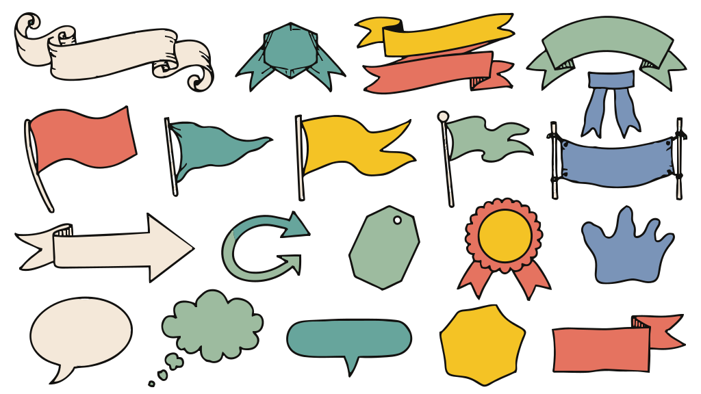

Sumber uji (1024 × 576)
Sesudah perbaikan — offline

Perbaikan menjaga bidang kecil yang warnanya didukung gambar sumber. Panel kanan membedakan ekspor UI pengguna dari hasil uji offline. Resize offline memakai sips; hasil UI baru belum diverifikasi.
